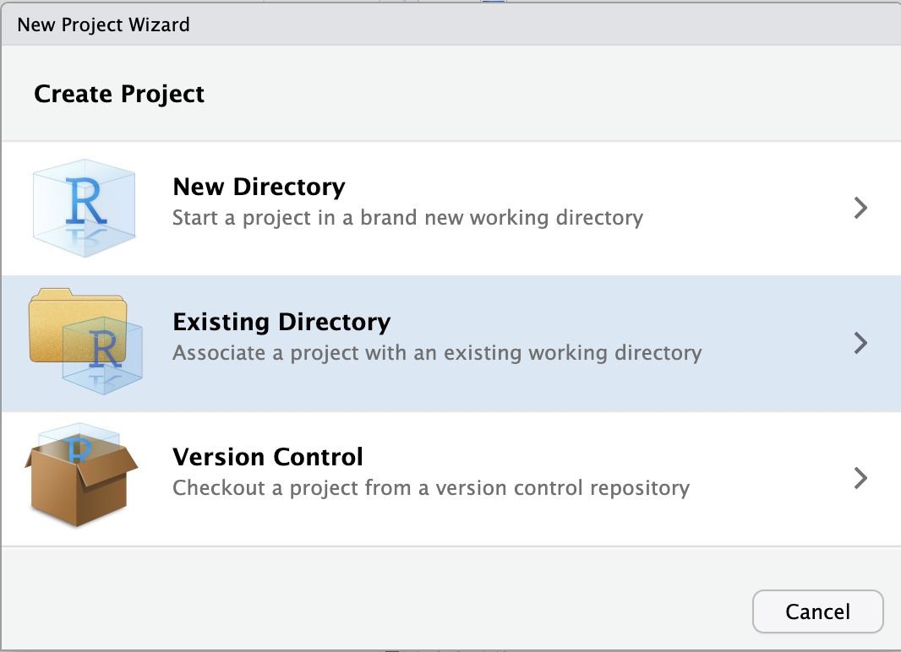

203 / 2.54[1] 79.92126R is a versatile, open source programming/scripting language that’s particularly useful for statistics and data visualization.
Yes, there is a learning curve, and many of us just want to get on with our analysis –
but investing in learning R will pay off:
Furthermore, R:
vector and data.framedata.frameLog in to OSC at https://ondemand.osc.edu
Click on Interactive Apps (top bar) and then RStudio Server (all the way at the bottom)
Fill out the form as follows:
Pitzer4.3.0PAS27144any1(Note: some values are fill out differently – please use the values from the list above.)
Click the big blue Launch button at the bottom
Now, you should be sent to a new page with a box at the top for your RStudio Server “job”, which should initially be “Queued” (waiting to start).

Connect to RStudio Server at the bottom of the box, and an RStudio Server instance will open in a new browser tab. You’re ready to go!R simply provides a “console” to type your commands. However, because we want to save our commands in scripts, examine output such a graphics, and so on, we would like an environment that provides all of this side-by-side.
We will use RStudio, an excellent “Integrated Development Environment” (IDE) for R. In RStudio, we have a single interface to write code, navigate files on our computer, inspect the objects we create, and visualize plots.
RStudio is divided into 4 “panes”1:
The lower-left RStudio pane, i.e. the R console, is where you can interact with R directly. The > sign is the R “prompt”. It indicates that R is ready for you to type something.
Let’s start by performing a division:
203 / 2.54[1] 79.92126R does the calculation and prints the result, and then you get the > prompt again. (The [1] may look a bit weird when there is only one output element; this is how you can keep count of output elements.)
With the standard symbols you can use R as a general calculator:
203 * 2.54 # Multiplication[1] 515.62203 + 2.54 # Addition[1] 205.54 203 - 2.54[1] 200.46This works: so R just ignores any extra spaces. How about:
203 ++. What is going on? (Click for the answer)
R is waiting for you to finish the command, since you typed an incomplete command: something has to come after the + to be added to what came before.
+ prompt, you are missing something in your command: often, you’ll have forgotten a closing parenthesis ) or you accidentally opened up an unwanted opening parenthesis (.
Press the Esc button to get your prompt back.
And if we just type a number:
203[1] 203R will print the number back to us! It turns out that the default, implicit action that R will perform on anything you type is to print it back to us (it is calling a function called print() under the hood).
Rather than a number, what if we want R to print back to us some text, which in programming lingo is called a “character string”?
FantasticError in eval(expr, envir, enclos): object 'Fantastic' not foundWhenever you type a character string, R expects to find an “object” with that name. (Or, if you would use parentheses after the string, like string(), it will expect a function.)
Because no object called Fantastic exists, R throws an error. To refer to a literal string instead, we need to use quotes (see below).
We can get R to print character strings back to us, and work with them in other ways, as long as we quote the strings:
"Fantastic"[1] "Fantastic""I'm really liking R so far."[1] "I'm really liking R so far."So, R treats numbers and character strings differently: unlike numbers, character strings need to be quoted. This avoids confusion with objects (we’ll learn about those in a minute) because unquoted character strings are assumed to be objects, and also allows for “special characters” like spaces.
Double quotes ("Fantastic") and single quotes ('Fantastic') can be used interchangeably in R. Double quotes are preferred by most “style guides”.
We can go along like this, typing commands directly into the R console. But to better keep track of what you’re doing, it’s a good idea to write your code in files, i.e. “scripts”. And when we start creating scripts, we need to worry about how we organize the scripts and data for a project.
It is good practice to keep a set of related data, analyses, and text self-contained in a single folder, and use that folder as the working directory — in the Unix shell and in R alike. RStudio provides a helpful way to keep your working directory constant through its “Projects”. When you use a Project, your working directory will be the top-level directory of that project.
To create a new RStudio Project inside your personal dir in /fs/ess/PAS2714/users (e.g., for me, the dir /fs/ess/PAS2714/users/jelmer)
If you followed the shell homework, you should have created your own dir within /fs/ess/PAS2714/users.
If you don’t have one, you can quickly create it as follows:
dir.create(paste0("/fs/ess/PAS2714/users/", Sys.getenv("USER")))File (top bar, below your browser’s address bar) > New ProjectExisting Directory.
Browse... to select your personal dir.
~), from which you can’t click your way to /fs/ess! Instead, you’ll first have to click on the (very small!) ... highlighted in the screenshot below:
/fs/ess/PAS2714/users, e.g. like shown below, and click OK:
/fs/ess/PAS2714/users/jelmer.Choose to pick your selected directory.Create Project.RStudio should reload and you should now have your new Project “open”. Your working directory should be the Project’s directory. We can check this using getwd():
getwd()/fs/ess/PAS2714/users/jelmerFrom now on, we will not change our working directory, and refer to all files relative to our project’s top-level directory.
File > New File > R Script)File > Save As to save the script in the scripts dir that you should see within your personal dir.2 Give it a descriptive name like intro-to-R.R.From now on, type your commands into this script and execute the commands from there.
To send code from your script to the console, press Ctrl + Enter. This will copy the line of code that your cursor is at to the R console and execute it, and then the cursor will move to the next line.
You can use # signs to comment your code:
# Divide by 2.54 to get the wingspan in inches:
203 / 2.54 # Original measurement was in cm# is ignored by R, meaning it won’t be executed# both at the start of a line (entire line is a comment) or anywhere in a line following code (rest of the line is a comment)We recommend that you use lots of comments in your R scripts! They are useful not only for others that you may share your code with, but also for yourself when you look back at your code a day, a month, or a year later.
We can assign pretty much anything to an object with the assignment operator, <-3. (This is a smaller-than sign < followed by a dash -.)
A few examples:
wingspan_cm <- 203
conversion <- 2.54Type that into your script, and use Ctrl/Cmd + Enter twice to send it to the console.
The objects you create get added to your “environment”, which RStudio shows in the Environment tab in the top-right panel — check that wingspan_cm and conversion are indeed there.
After you’ve assigned a number to an object, you can use it in calculations like so:
wingspan_cm / conversion[1] 79.92126Or, similarly:
wingspan_inch <- wingspan_cm / conversion
wingspan_inch[1] 79.92126This illustrates that when you execute code with objects, R substitutes the object name that you provide by its contents under the hood. In other words, the object is just a reference to the underlying value(s).
Objects can be given almost any name such as x, current_temperature, or subject_id. Some pointers on object names:
Because R is case sensitive, wingspan_inch is different from Wingspan_inch!
An object name cannot contain spaces — so for readability, you should separate words using:
wingspan_inch (this is called “snake case”, which we often use in Code Club)wingspan.inchwingspanInch or WingspanInch (“camel case”)You will make things easier for yourself by naming objects in a consistent way, for instance by always sticking to your favorite case style like “snake case.”4
Object names can contain but cannot start with a number: x2 is valid but 2x is not. (There are also some other restrictions that are beyond the scope of this introduction5.)
Make object names descriptive yet not too long — this is not always easy!
What is the value of y after doing all of the following?
x <- 50
y <- x * 2
x <- 80Objects don’t get linked to each other, so if you change one, it won’t affect the values of any others. Therefore, y will keep the value 100.
Earlier, we divided 203 by 2.54, but what if we wanted to round the resulting number? Like for many things you may want to do in R, there is a function for that.
Functions are used by typing their name followed by parentheses:
round(203 / 2.54)[1] 80Here, round() is a function that rounds a number. The value in the parentheses is called a function “argument”, which is used in the execution of the function.
Functions can have more than one argument, and some of them may have default values.
There are some functions that take many arguments and it can get confusing trying to keep them in order. In that case, it is better to explicitly name the arguments.
When you type a function name and pause for a moment, the arguments, their names, and their default values (i.e., the value if the argument is left unspecified) will be shown.
round() and what is its default value? (Click here)
round has a second argument digits whose default is 0, such that numbers will be rounded to whole integers.
Below is an example using named arguments with round(). When the arguments are named, the order doesn’t matter! You might also enter the first few important arguments positionally, and later ones by naming them.
round(x = 1.538462, digits = 2)[1] 1.54round(digits = 2, x = 1.538462)[1] 1.54round(1.538462, digits = 2)[1] 1.54Also here, we can directly plug in objects:
wingspan_in <- 203 / 2.54
round(wingspan_in)Or “nest” functions — here we are adding the log() function to compute the natural log:
log(round(203 / 2.54 ))round() is executed first, and the output of round() is used as the input of log().
As we saw, when we typed round and paused for a moment, we got a pop-up with information about the function.
Alternatively, you could type:
?round… and the documentation for the function will show up in the lower-right pane.
This documentation is often a bit too detailed, and can be terse, so it takes some practice to read. Usage, Arguments, and at the bottom, Examples, are most useful.
Googling what you want to do, even if you don’t know whether a function exists, will work too (e.g. “rounding a number in r”).
A vector is the most common and basic data structure in R, and is composed of a series of values of the same type6. We can assign a series of values to a vector using the c() function (for “combine”). For example:
wingspans_cm <- c(11.8, 203, 18.2, 27.9)A vector can also contain characters – but again, quoting is important, or R will think the strings are objects:
birds <- c("hummingbird", "bald_eagle", "chickadee", "cardinal")As mentioned, all of a vector’s elements have to be of the same type of data. The function class() indicates what kind of data you are working with:
class(wingspans_cm)[1] "numeric"class(birds)[1] "character"The classes we saw above are different types of atomic vectors, R’s simplest data type. The 4 most common atomic vector types are:
"numeric" (or "double") – floating point numbers (numbers with decimals)"integer" – integer numbers (no decimals)"character" – character strings"logical" – TRUE and FALSE (also known as boolean)Also worth mentioning in this context is:
factor – Character strings with a discrete set of possible values, used mostly for statistical tests and plotting7.What happens if we try to mix vector types (e.g., “character and numeric”) in a single vector? R converts them to all be the same type, and it does so without telling us about it. For example:
num_char <- c(1, 2, 3, "a")
class(num_char)[1] "character"Let’s say we wanted to convert our vector of wingspans to inches: dividing each length in centimeters by 2.54.
It turns out that this is as easy as dividing the vector by 2.54:
# wingspans_cm <- c(11.8, 203, 18.2, 27.9) # Still working with the same wingspans_cm vector
wingspans_in <- wingspans_cm / 2.54
wingspans_in[1] 4.645669 79.921260 7.165354 10.984252This works because R “vectorizes” operations whenever it can. This means that in this case, each element in the vector weights_cm will be divided by 2.54 – this number is recycled to match the number of weights. Very useful!
Similarly, we can use two vectors of equal length to quickly operate on each element of the vector:
sizes_cm <- c(7.62, 90, 13.1, 21.8)
ratio <- wingspans_cm / sizes_cm
ratio[1] 1.548556 2.255556 1.389313 1.279817Recall that you can convert a temperature of, for example, 26 Fahrenheit to Celcius as follows:
# (26°F - 32) / 1.8 = -3.3°C
(26 - 32) / 1.8[1] -3.333333Create and store a vector with the values 26, 21, 24, 32, 33, 41, 51, representing temperatures in Fahrenheit.
Now convert all the values in this vector from Fahrenheit to Celcius.
Thanks to R’s vectorization, you don’t have to convert these values 1-by-1:
temps_f <- c(26, 21, 24, 32, 33, 41, 51)
(temps_f - 32) / 1.8[1] -3.3333333 -6.1111111 -4.4444444 0.0000000 0.5555556 5.0000000 10.5555556While vectors can be composed of one of several data types, they, in turn, are one of several data structures that R uses. Other important ones are8:
data.frame – A rectangular data structure where each column can be a different data type.matrix – A rectangular data structure of a single data type.list – A very flexible data structure that we will not further discuss here.A data frame (formal object type: data.frame) is a rectangular data structure in which:
We can easily create a data frame by hand using the data.frame() function and “column_name = column_vector” notation for each column:
birds_df <- data.frame(species = birds,
wingspan = wingspans_cm,
size = sizes_cm,
n_eggs = c(2, 2, 7, 4)) birds_df species wingspan size n_eggs
1 hummingbird 11.8 7.62 2
2 bald_eagle 203.0 90.00 2
3 chickadee 18.2 13.10 7
4 cardinal 27.9 21.80 4Most often, however, you’ll be reading your data frames from files. And you’ll also want to save your modified data frames.
So let’s practice writing and reading a data frame to and from a “CSV” file — a plain-text, tabular file in which columns are delimited by commas (“Comma-Separated Values” file).
# Write a data frame to CSV format:
write.csv(x = birds_df, file = "sandbox/bird-data.csv", row.names = FALSE)If you want to do the following yourself: next to the R Console, there is tab called Terminal, which will open a Unix shell (!). In there, type the following:
cat sandbox/bird-data.csv"species","wingspan","size","n_eggs"
"hummingbird",11.8,7.62,2
"bald_eagle",203,90,2
"chickadee",18.2,13.1,7
"cardinal",27.9,21.8,4Now we read our data frame back in from the file:
birds_df_2 <- read.csv("sandbox/bird-data.csv")
birds_df_2 species wingspan size n_eggs
1 hummingbird 11.8 7.62 2
2 bald_eagle 203.0 90.00 2
3 chickadee 18.2 13.10 7
4 cardinal 27.9 21.80 4Use str() to look at the structure of the data.
str(birds_df)'data.frame': 4 obs. of 4 variables:
$ species : chr "hummingbird" "bald_eagle" "chickadee" "cardinal"
$ wingspan: num 11.8 203 18.2 27.9
$ size : num 7.62 90 13.1 21.8
$ n_eggs : num 2 2 7 4This tells us the number rows and columns, and for each column, gives information about the data type and shows the first few values.
Another useful function is summary():
summary(birds_df) species wingspan size n_eggs
Length:4 Min. : 11.80 Min. : 7.62 Min. :2.00
Class :character 1st Qu.: 16.60 1st Qu.:11.73 1st Qu.:2.00
Mode :character Median : 23.05 Median :17.45 Median :3.00
Mean : 65.22 Mean :33.13 Mean :3.75
3rd Qu.: 71.67 3rd Qu.:38.85 3rd Qu.:4.75
Max. :203.00 Max. :90.00 Max. :7.00 Finally, in RStudio, you can open a data frame in a spreadsheet-like manner by clicking on an object in the “Environment” pane, or equivalently, using View():
View(birds_df)dim() – Dimensions: c(number of rows, number of columns)nrow() – Number of rowsncol() – Number of columnslength() – For a dataframe: number of columns. For a vector: number of elements.head() – shows the first 6 rowstail() – shows the last 6 rowsnames() or colnames() – column namesrownames() – row namesstr() – structure of the object and information about the class, length and content of each columnsummary() – summary statistics for each columnmtcars is an example data frame that is always available in R.
head() to print the first 6 rows of the mtcars dataframe.head(mtcars) mpg cyl disp hp drat wt qsec vs am gear carb
Mazda RX4 21.0 6 160 110 3.90 2.620 16.46 0 1 4 4
Mazda RX4 Wag 21.0 6 160 110 3.90 2.875 17.02 0 1 4 4
Datsun 710 22.8 4 108 93 3.85 2.320 18.61 1 1 4 1
Hornet 4 Drive 21.4 6 258 110 3.08 3.215 19.44 1 0 3 1
Hornet Sportabout 18.7 8 360 175 3.15 3.440 17.02 0 0 3 2
Valiant 18.1 6 225 105 2.76 3.460 20.22 1 0 3 1mtcars contain?It contains 32 rows and 11 columns:
dim(mtcars)[1] 32 11Or:
nrow(mtcars)[1] 32ncol(mtcars)[1] 11mtcars.colnames(mtcars) [1] "mpg" "cyl" "disp" "hp" "drat" "wt" "qsec" "vs" "am" "gear"
[11] "carb"We can pull out parts of vectors and data frames using square brackets.
For example, for vectors:
# Remind ourselves what this vector contains
wingspans_cm[1] 11.8 203.0 18.2 27.9# Get the first element
wingspan_cm[1][1] 203# Get the third element
wingspan_cm[3][1] NAYou can pull out larger “slices” from the vector by providing vectors of indices:
# Get the first and the third element
wingspan_cm[c(1, 3)][1] 203 NAThe : operator gives you a sequence of consecutive values, which you can also using for slicing:
# Get the second through the fourth element
wingspan_cm[2:4][1] NA NA NATo subset data frames, we need to provide two values: row and column, with a comma between them.
For example, to get the element in the 1st row, 1st column:
birds_df[1, 1][1] "hummingbird"To get the element in the 2nd row, 3rd column:
birds_df[2, 3][1] 90To get the entire 2nd row, leave the column part blank:
birds_df[2, ] species wingspan size n_eggs
2 bald_eagle 203 90 2And to extract the entire 3rd column, leave the row part blank:
birds_df[, 3][1] 7.62 90.00 13.10 21.80To extract a column, you can also refer to it by name, in multiple ways:
birds_df$size[1] 7.62 90.00 13.10 21.80birds_df[, "size"][1] 7.62 90.00 13.10 21.80birds_df.birds_df[1:3, 4][1] 2 2 7Or:
birds_df[c(1, 2, 3), 4][1] 2 2 7$ notation to extract the n_eggs column from birds_df.birds_df$n_eggs[1] 2 2 7 4Another common way of subsetting is by using a logical vector of the same length as the original vector: any TRUE will select the element with the same index, while FALSE will not:
wingspans_cm[1] 11.8 203.0 18.2 27.9# This will extract the 1st and the 4th element
wingspans_cm[c(TRUE, FALSE, FALSE, TRUE)][1] 11.8 27.9Typically, these logical vectors are not typed by hand, but are the output of other functions or logical tests. For instance, if you wanted to select only the values above 20:
# This will return a logical vector with TRUE for indices that meet the condition
wingspans_cm > 20[1] FALSE TRUE FALSE TRUE# We can use such a vector to select only the values above 20
wingspans_cm[wingspans_cm > 20][1] 203.0 27.9== and %in%You can test for equality with ==:
"chickadee" == "chickadee"[1] TRUE# Which element(s) of the birds vector equal "chickadee"
birds == "chickadee"[1] FALSE FALSE TRUE FALSE# Extract the element(s) of the birds vector that equal "chickadee"
birds[birds == "chickadee"][1] "chickadee"If you want to use a search vector with multiple items, use %in% instead:
# Which element(s) of the birds vector match any of the 3 birds on the right-hand side
birds %in% c("chickadee", "hummingbird", "shoebill")[1] TRUE FALSE TRUE FALSE# Extract those elements
birds[birds %in% c("chickadee", "hummingbird", "shoebill")] [1] "hummingbird" "chickadee" Given the following inhabitants of a house, and a list of species to keep:
inhabitants <- c("rat", "rat", "dog", "mouse", "cat", "cat")
keep <- c("dog", "cat")What do you think the following would return? (Test it and see if you were right.)
inhabitants %in% keepkeep %in% inhabitantsinhabitants %in% keep[1] FALSE FALSE TRUE FALSE TRUE TRUEkeep %in% inhabitants[1] TRUE TRUEdogs and cats from the inhabitants vector with logical subsetting.inhabitants[inhabitants %in% keep][1] "dog" "cat" "cat"As R was designed to analyze datasets, it includes the concept of missing data (which is uncommon in other programming languages). Missing data are represented as NA (for “Not Available”).
heights <- c(2, 4, 4, NA, 6)When doing operations on numbers, most functions will return NA if the data you are working with include missing values. It is a safer behavior as otherwise you may overlook that you are dealing with missing data. You can add the argument na.rm=TRUE to calculate the result while ignoring the missing values.
mean(heights)[1] NAmean(heights, na.rm = TRUE)[1] 4The functions that we have been using so far (and many, many more) are available in any R session as soon as you start R (we refer to this functionality as “base R”). However, when doing specialized analyses such as in microbiomics, rather than coding up everything using the basic building blocks in R, we can load add-on code that will allow us to use “high-level” functions specifically geared towards the effective analyses of such data.
This type of add-on code is distributed in R packages. The default repository for R packages is CRAN, and you install CRAN packages with the install.packages() function:
# Don't run this
install.packages("tidyverse")If you’re doing bioinformatic analyses in R, as we will be doing, you will encounter packages that are not on CRAN but are on “Bioconductor”. To install a package from Bioconductor, use the BiocManager package – for example:
# Don't run this
install.packages("BiocManager") # Install the BiocManager package
BiocManager::install("dada2") # Install the dada2 package from BioconductorThe installation of some packages is tricky at OSC nowadays, and if you were to try the commands above, they would likely fail. With a bit of extra effort, we can install these packages, but during the workshop, we will be using a custom collection of pre-installed packages.
Some very brief notes on saving your data in R:
We already saw the use of write.csv() to save data frames, and you can also use one of readr’s writing functions.
To save R objects “as is”, which can be useful when you’re working with complex S4 objects that may have taken a long time to generate, like a phyloseq object, you can use:
# Don't run this
# Save an object:
saveRDS(my_phyloseq_object, "my_phyloseq_object.RDS")
# Load it again in a new R session:
my_phyloseq_object <- readRDS("my_phyloseq_object.RDS")A general recommendation is to not rely on your R session to keep things around, especially “overnight”. Devise your workflow such that you are always saving important objects and results outside of R, and can always use your R script to restart from where you left off.
Along the line of the above, the default behavior of saving and restoring your “Workspace”, which are all the items (objects) that you create during an R session, is bad practice. Instead, you should always recreate your environment from a script and/or saved files with individual pieces of data.
Change the following setting to prevent R from saving your Workspace whenever you close R:
Tools (top bar, below your browser’s address bar) > Global OptionsGeneral tab), change the settings under the “Workspace” heading to:While the object types we have discussed so far are so-called “S3” objects, we will also be seeing “S4” objects in this workshop. S4 object are commonly used by bioinformatics packages, for instance phyloseq.
In a nutshell, S4 objects allow for complicated, multifaceted datasets (e.g. multiple dataframes with and metadata) to be represented in a single object in a standardized way.
Unlike S3 objects, S4 objects are usually not manipulated by simple assignment with <-, but with specialized functions that are sure to adhere to the strict object definitions.
This document only scratched the surface of R, but it has hopefully provided a good starting point for working with R.
Here are some potential next steps:
Both of those topics and some other material are also covered in this excellent Carpentries workshop R for Reproducible Scientific Analysis.
If you want to start with a book, I would recommend Wickham & Grolemund’s “R for Data Science”, which is freely available on the web in a really nice format here.
If you want to try using the tidyverse in RStudio at OSC now, then load it as follows:
.libPaths("/fs/ess/PAS0471/jelmer/R/metabar")
dyn.load("/fs/ess/PAS0471/jelmer/software/GLPK/lib/libglpk.so.40", local = FALSE)
library(tidyverse)This material was modified after material from The Carpentries, especially from this Data Carpentry workshop and this “R for Ecology” workshop.
The placement of these panes and their content can be customized.↩︎
You created this in the shell introduction. If you don’t have it, create it now.↩︎
In RStudio, typing Alt + - will write <- in a single keystroke. You can also use = as assignment, but that symbol can have other meanings, and so I recommend sticking with the <- combination.↩︎
It is also recommended to use nouns for variable names, and verbs for function names. For more, two popular R style guides are Hadley Wickham’s and Google’s.↩︎
For example, there are some names that cannot be used because they are the names of fundamental keywords in R (e.g., if, else, for, see here for a complete list). In general, it’s also best not to use the names of existing functions, even though this is possible.↩︎
Technically, a vector can have a length of 1, so our earlier single numbers were vectors too.↩︎
This is technically a type of data structure.↩︎
Note, that technically, factors are a data structure, but they are more intuitively thought of as a data type↩︎